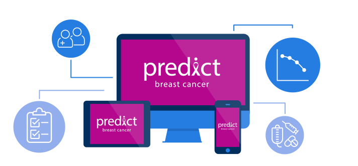
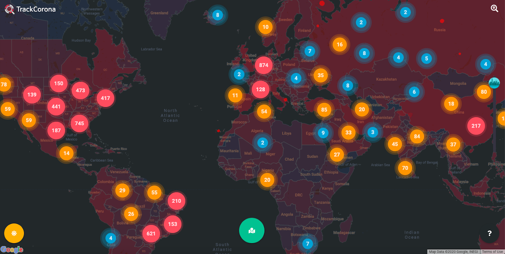
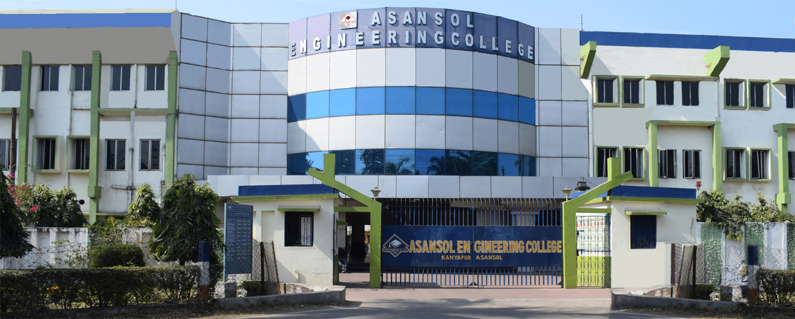

Total vulnerabilities driven through remediation across enterprise environments.
Cloud Security Architect / DevSecOps Engineer
I secure the cloud. At scale.
I design and automate resilient cloud security across AWS, GCP, and Azure, turning policy, identity, application protection, and vulnerability remediation into repeatable engineering systems.
AWS SecurityDevSecOpsPolicy as CodeCloud ArchitectureVulnerability Management
01 / Impact
Security outcomes measured in systems strengthened.
From cloud controls to vulnerability closure, I focus on security programs that can prove their impact.
Years across cloud security and DevSecOps.
High-risk vulnerabilities remediated.
Policy-as-code controls created.
Custom AWS WAF rules designed.
02 / Expertise
Architecture meets hands-on engineering.
I work across strategy, controls, automation, and remediation, with enough depth to carry security from design review into production.
Cloud Security Architecture
Secure migration patterns, IAM, zero trust, WAF, CloudTrail, CloudWatch, Route 53, Cloudflare, and architecture across AWS, Azure, and GCP.
DevSecOps Engineering
Jenkins shared libraries, CI/CD security controls, secure SDLC, Docker, GKE, Apigee, Google App Engine, Python, and Bash automation.
Policy & Cloud Governance
Terraform, HashiCorp Sentinel, Azure Policy, OPA/Rego, Bridgecrew, CIS benchmarks, NIST alignment, and scalable compliance guardrails.
Vulnerability Management
Wiz, Prisma Cloud, Rapid7, Tenable.io, Burp Suite, OWASP ZAP, Nmap, CVE reporting, and risk-based prioritization.
AWSGCPAzureTerraformJenkinsWizPrisma CloudOPA/RegoSentinelDockerGKEPythonBashCloudflare
03 / Experience
Built in production, not just on paper.
A career moving from vulnerability management into multi-cloud architecture, with automation connecting every step.
Cloud Security Architect
Global PaymentsLeading AWS payment gateway security architecture, secure migration patterns, IAM controls, WAF protections with 20+ custom rules, compliance evidence, and remediation of 500+ critical, 2,000+ high, and 5,000+ total vulnerabilities.
Senior DevOps Engineer
Global PaymentsBuilt Jenkins shared libraries and CI/CD pipelines for Apigee, Google App Engine, and GKE while integrating Wiz, Prisma Cloud, cloud security controls, and Carbon Black automation.
DevOps Engineer
Tata Consultancy ServicesAutomated build, test, infrastructure, and deployment workflows using Jenkins, Terraform, Docker, AWS IAM, and multi-cloud operations across AWS, GCP, and Azure.
Cloud Security Engineer
Tata Consultancy ServicesCreated 400+ HashiCorp Sentinel policies and cloud guardrails with Terraform, Azure Policy, Bridgecrew, OPA/Rego, CSPM practices, CIS benchmarks, and cloud governance requirements.
Vulnerability Management SME
Tata Consultancy ServicesUsed Rapid7, Tenable.io, Burp Suite, OWASP ZAP, and Nmap to identify, prioritize, report, and remediate application and infrastructure vulnerabilities.
04 / Selected work
Earlier builds that shaped how I solve problems.
Computer vision, predictive modelling, and data visualization projects from my engineering journey.
Computer Vision / Python
Age and Gender Prediction Model
CNN-based age and gender classification using Python and OpenCV.

Machine Learning / Python
Breast Cancer Detection
Predictive classification of malignant and benign diagnoses.

Data Visualization / Python
COVID-19 Visualisation
Global tracking of active, recovered, and fatal case data.

Asansol, India05 / Foundation
Engineering first. Security always.
I earned my B.Tech in Electronics and Communication Engineering at Asansol Engineering College, building the technical foundation behind my systems approach to cloud security.
- Certifications
- Microsoft Azure Fundamentals (AZ-900)
SAFe DevOps Certification - Languages
- English, Hindi, Bengali, Spanish